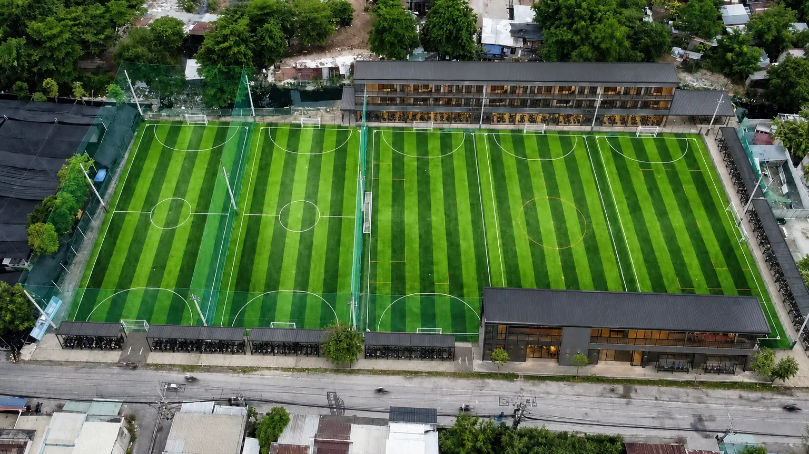
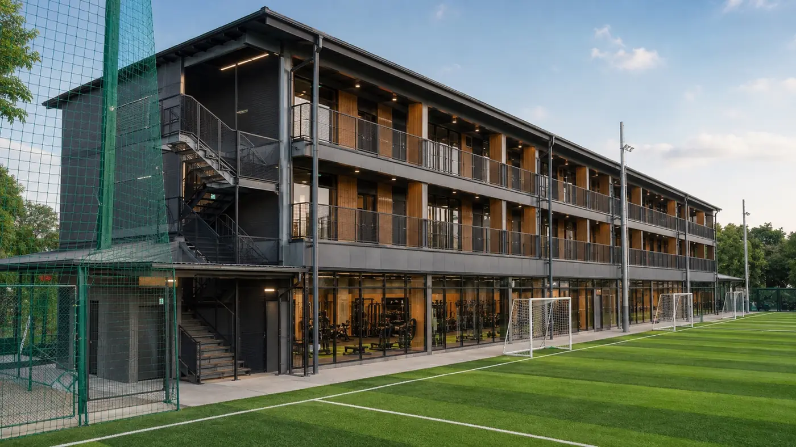
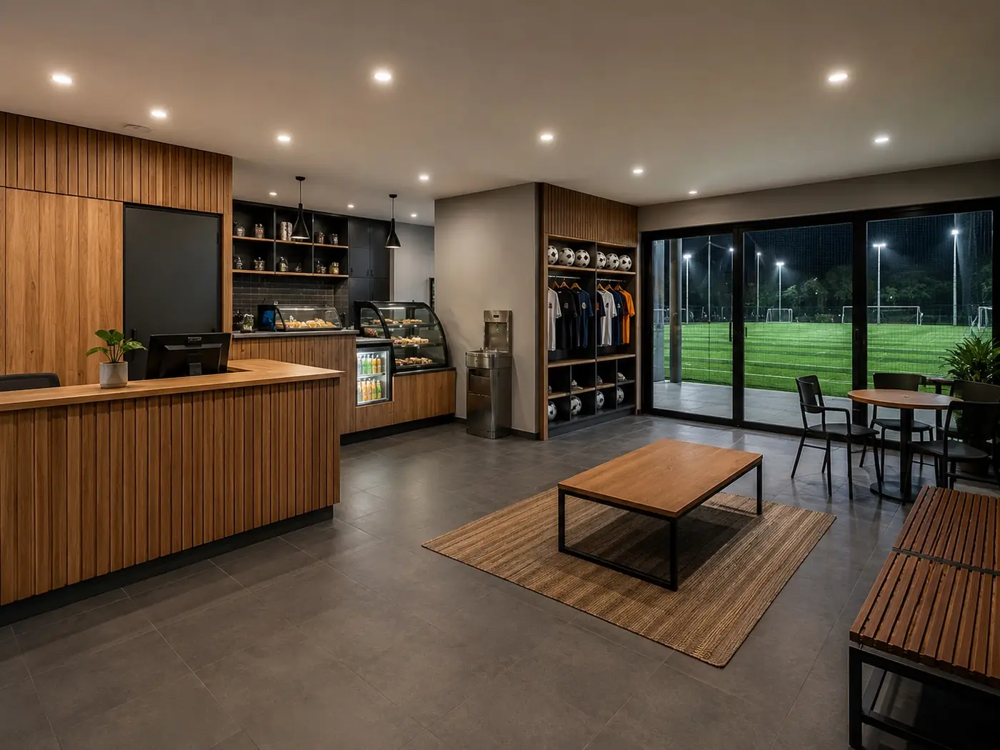
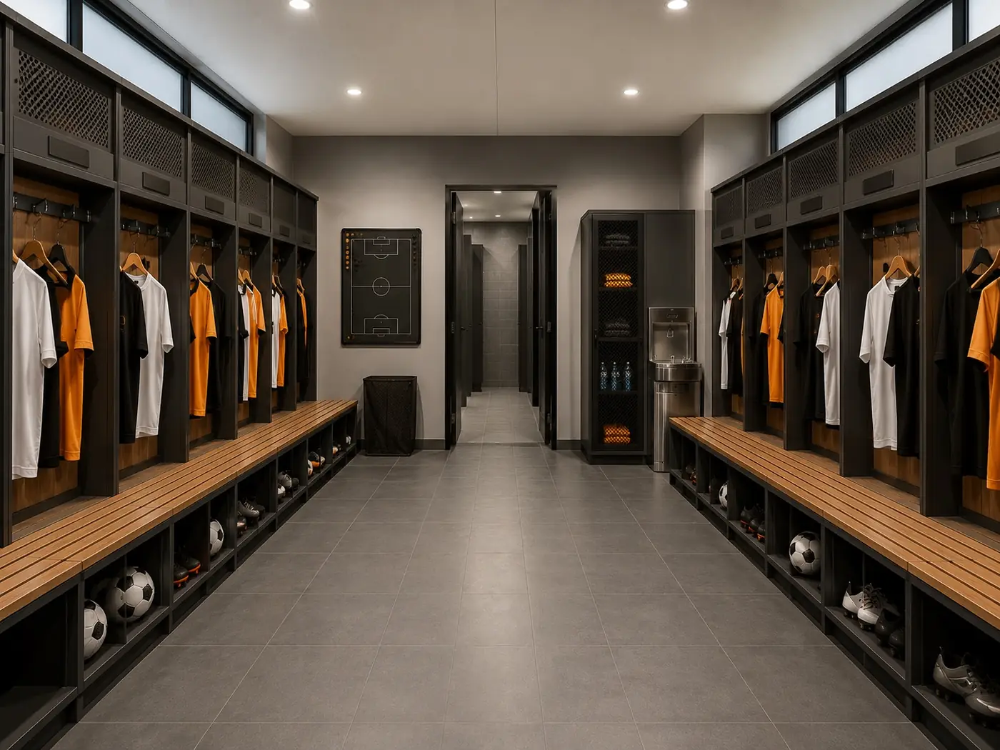
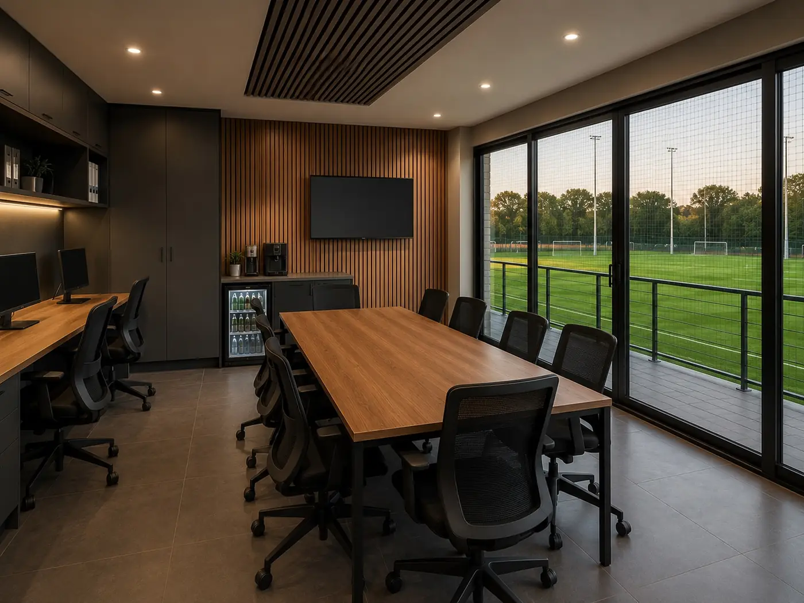
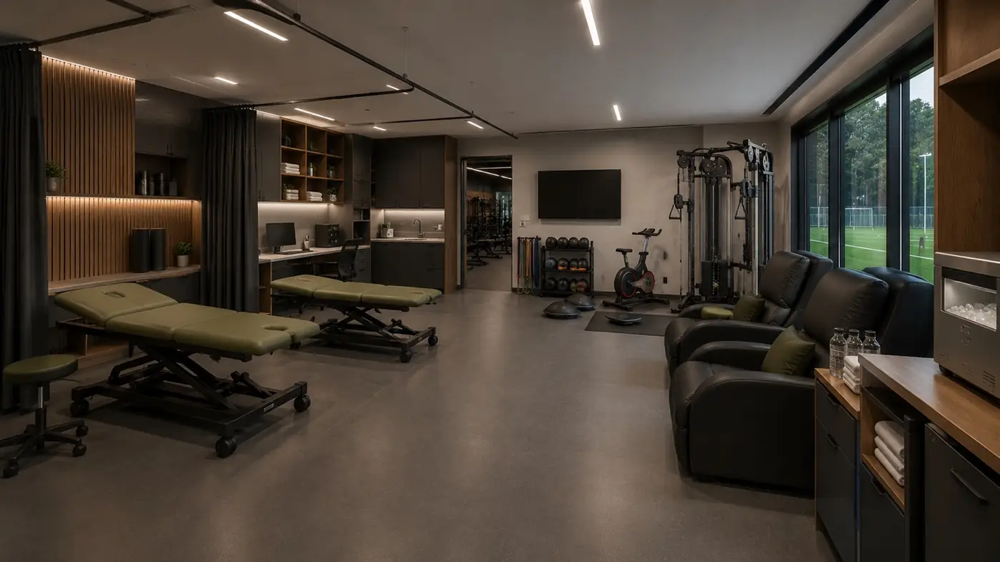
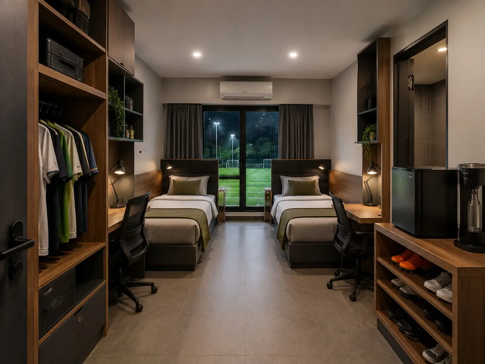
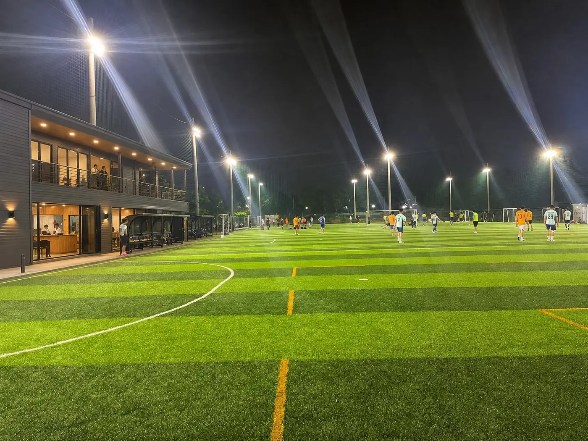
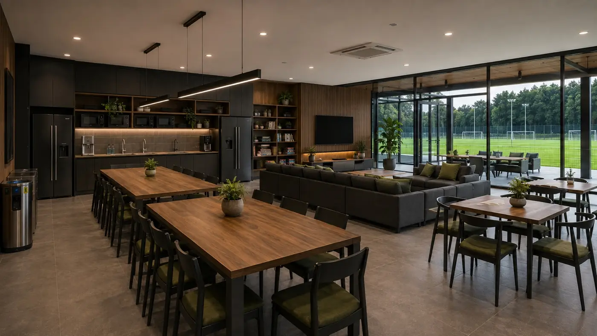
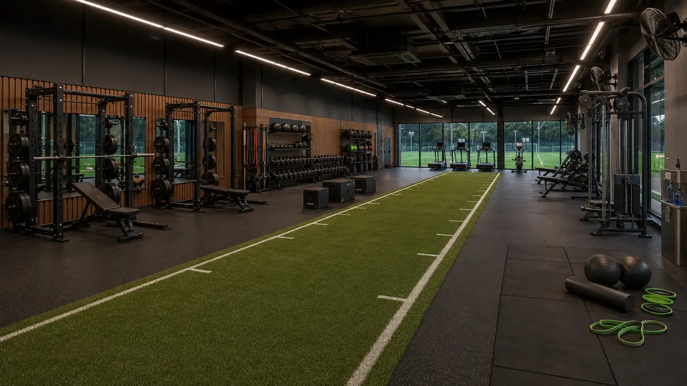

Một tầm nhìn dài hạn nhằm nghiên cứu khả năng nâng cấp khu sân NOK hiện hữu thành Football & Performance Campus phục vụ bóng đá, cầu thủ và hoạt động của Rose FC.






TRAIN TOGETHER.
LIVE TOGETHER.
GROW TOGETHER.



Ổn định đội hình, văn hóa, hệ thống vận hành, kỷ luật, tài chính và năng lực tổ chức.
Phát triển quy mô hoạt động, chất lượng thi đấu và tiếp tục nghiên cứu quy hoạch, thiết kế, chi phí cùng mô hình vận hành Rose Base.
Nếu điều kiện nguồn lực và tính khả thi cho phép, từng bước triển khai các hạng mục mang lại giá trị trực tiếp nhất cho cầu thủ và CLB.
Một nơi để chơi bóng. Một nơi để trưởng thành. Một nơi để thuộc về.
← Back to Road to VGF